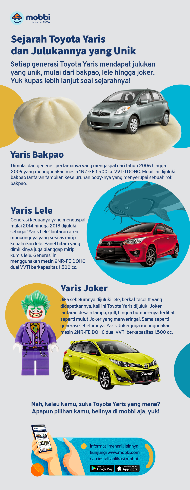

Sejarah Toyota Yaris dan Julukannya yang Unik

Unik-unik banget ya julukannya? Tapi, nggak cuma itu, keunggulan
yang dimiliki setiap generasinya juga membuat sejarah Toyota
Yaris nggak kalah seru untuk dikulik lebih dalam. Apalagi jika
mengingat eksistensinya yang sudah 16 tahun di Tanah Air. Untuk
itu, yuk simak sejarah Toyota Yaris dan keunggulan dari
masing-masing generasi, berikut ini! Yaris Bakpao (2006-2009)
Toyota Yaris pertama kali mengaspal di Indonesia pada tahun 2006
dengan mengusung tampilan layaknya bakpao dengan panjang 3.750
milimeter, lebar 1.695 milimeter, dan tinggi 1.530 milimeter,
wheelbase 2.460 milimeter dan ground clearance 140 milimeter.
Dari segi performa, Toyota Yaris generasi ini dibekali mesin
1NZ-FE 1.500 cc VVT-i DOHC. Mesin tersebut mampu menghasilkan
tenaga mencapai 107 daya kuda pada 6.000 RPM. Sementara untuk
torsi puncaknya mencapai 142 Nm pada putaran mesin 4.200 RPM.
Fitur-fitur seperti ABS (Anti-Lock Braking System), EBD
(Electronic Braking Distribution), dual SRS Airbag, reclining
seats, power door lock, hingga electric folding mirrors sudah
disematkan pada mobil ini. Ada juga fitur lain seperti engine
start/stop dan steering wheel audio yang bisa ditemukan pada
varian S Limited.
Yaris Lele (2014-2018)
Generasi keduanya atau yang lebih dikenal sebagai Yaris Lele resmi mengaspal pada tahun 2014 hingga 2018 dengan 3 pilihan varian, yakni E, G, dan TRD Sportivo yang merupakan varian tertinggi.
Pada generasi ini, Toyota Yaris tampil lebih sporty, hal ini berkat bagian lampu depan yang terlihat tajam, dipadukan dengan grille yang simpel dan desain bumper dengan lekukan yang agresif serta logo Toyota di tengahnya.
Dimensi bodinya pun juga lebih melar, yakni dengan panjang 4.115 milimeter, lebar 1.700 milimeter, serta tinggi 1.475 milimeter.
Soal performa, mobil ini dibekali mesin yang sama dengan generasi sebelumnya. Namun, pada tahun 2016, mesinnya mengalami perubahan dengan menggunakan mesin berkode 2NR-FE DOHC Dual VVT-i. Mesin tersebut masih menggunakan kapasitas yang sama.
Untuk fiturnya, Toyota Yaris generasi kedua sudah dilengkapi dengan dual SRS Airbag, ABS, EBD, BA (Brake Assist), alarm system, power retractable mirror, tilt steering, engine start/stop button, serta steering wheel audio control switch.
Hadir pula fitur hiburan head unit layar touch screen dengan ukuran 7 inci serta 6 speaker yang membuat perjalanan semakin menyenangkan!
Kemudian pada tahun 2018, Toyota Yaris Heykers resmi diluncurkan dengan tampilan layaknya mobil crossover. Salah satu ubahan yang didapat versi ini ada pada tampilannya, seperti adanya roof rail dan over fender berwarna hitam.
Yaris Joker (2020)
Meski punya julukan yang berbeda, tapi Toyota Yaris yang hadir di tahun ini bukan merupakan generasinya, lho. Melainkan hanya melakukan ubahan minor alias facelift pada tampilannya seperti desain bumper, grille dan lampu.
Nah, soal performa, mobil ini masih dibekali mesin yang sama. Bedanya, kali ini Toyota Yaris hadir dengan akselerasi yang lebih lincah dengan radius putar 5 meter. Hal tersebut juga membuat Toyota Yaris lebih bertenaga dan stabil saat bermanuver.
Toyota Yaris GR Sport (2021)
Sejarah Toyota Yaris masih berlanjut di tahun 2021 dengan diluncurkannya Toyota Yaris varian GR Sport yang hadir untuk menggantikan varian TRD Sportivo.
Dari segi tampilan, tidak banyak perbedaan jika dibandingkan dengan varian TRD Sportivo. Hanya saja, logonya yang semula TRD Sportivo diganti menjadi GR Sport.
Toyota Yaris GR Sport dibekali dengan fitur keamanan yang lengkap, seperti ABS, EBD, BA, VSC (Vehicle Stability Control), dan HSA (Hill-Start Assist).
Sedangkan, untuk urusan dapur pacu, Toyota Yaris GR Sport menggunakan mesin 1.500 cc 4 silinder DOHC Dual VVT-i yang mampu menghasilkan tenaga maksimal sebesar 105 daya kuda dan torsi puncak 140 Nm.
Nah, kalau kamu sendiri lebih suka Toyota Yaris yang mana, nih? Bakpao, Lele, Joker, atau GR Sport? Apapun pilihan kamu, jangan lupa belinya di mobbi aja, ya! Pilihannya banyak, unitnya berkualitas!
Semua unit di mobbi dijamin tidak pernah mengalami tabrakan yang mengubah struktur rangka dan terendam banjir. Dokumen dan odometer pun dijamin keasliannya.
Spesial bulan Oktober 2022, beli mobil di mobbi ada cashback senilai jutaan rupiah hingga asuransi gratis yang bikin mobil kamu terjamin perlindungannya!
Yuk beli mobil bekas di mobbi sekarang agar tidak ketinggalan promonya! mobbi juga bisa diakses melalui aplikasi dengan mengunduhnya di Play Store atau App Store.